第 8 章
ボディの操作
この章では、1 つのパーツの中に複数のボディがあるときの操作を説明します。ボディどうしを結合・分割し、動かし、不要なボディを削除し、名前を付けられるようになります。金型の割り型（コアとキャビティ）のように、1 つのパーツで複数の形を扱う設計に使います。この章の写真は、すべて samples/split_bodies.mcad を開いて撮りました。
8.1 マルチボディとブラウザ
1 つのパーツには、ボディをいくつでも持たせられます。ボディが増えるのは、押し出しやコイルなどの［出力］を［新規ソリッド］にしたとき、インポートで複数の形を読み込んだとき、ボディを分割したときです。
ブラウザのパーツの下に、ボディのフォルダが並びます。［ソリッド ボディ］のフォルダは、ボディが 0 個でもあります。ソリッドでないボディ（［サーフェス ボディ］・［ワイヤ ボディ］・［メッシュ ボディ］）は、あるときだけ別のフォルダに出ます。フォルダの名前の後ろに、ボディの数が出ます。

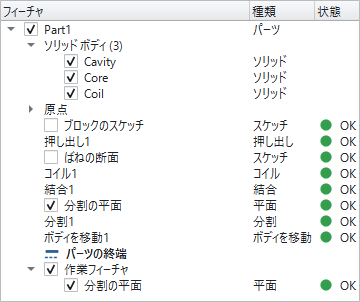
ボディの行をクリックすると、ビューでそのボディが選ばれます。ビューでボディの面をクリックしても、ブラウザの行が強調されます。
行のチェックで、ボディの表示・非表示を切り替えます（第 2 章）。
ボディの行を右クリックすると、この章のコマンドを含むメニューが出ます。

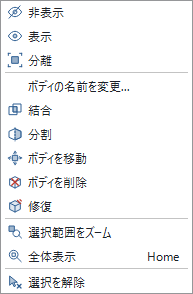
ボディを操作するコマンドは、リボンの［3D モデル］タブの［修正］パネルにあります。

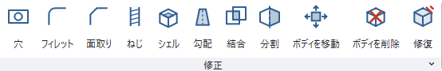
| コマンド | できること | 節 |
|---|---|---|
| ［結合］ | ボディどうしの和・差・共通部分を作る | 結合する |
| ［分割］ | 平面でボディを 2 つに分ける、片側を捨てる | 分割する |
| ［ボディを移動］ | ボディを移動・回転する、コピーを作る | ボディを移動する |
| ［ボディを削除］ | 選んだボディを削除する、選んだボディだけを残す | ボディを削除する |
| ［ボディの名前を変更］ | ボディに名前を付ける | ボディの名前 |
メニューの［修復］は、インポートした形の欠陥を直すコマンドです（第 13 章）。［非表示］・［表示］・［分離］・［選択範囲をズーム］・［全体表示］・［選択を解除］は、表示の操作です（第 2 章）。
4 つのコマンドは、押し出しなどと同じフィーチャです。履歴に並び、編集・抑制・並べ替え・Undo の対象になります。フォームの使い方は共通です。
リボンのボタンを押します。プロパティ パネルにフォームが出ます。
ボディの欄が選択を待っています（欄の色の四角が、ビューでのボディの色と同じです）。ビューでボディの面をクリックするか、ブラウザのボディの行をクリックして選びます。選んだボディは、ブラウザの行と同じ名前で欄に入ります。選びなおすときは、［外す］を押して選びなおします。
ほかの欄を決め、［OK］（Enter）で確定します。［キャンセル］（Esc）で取り消します。
8.2 ボディを結合する
［結合］は、ベース ボディとツール ボディの間で和・差・共通部分を計算します。結果はベース ボディの形になります。
リボンの［3D モデル］タブ → ［修正］パネル → ［結合］をクリックします。
ベースにするボディの面をビューでクリックします。［ベース ボディ］の欄に入ります。
［ツール ボディ］の欄をクリックし、ツールにするボディを選びます。ツール ボディは複数選べます。
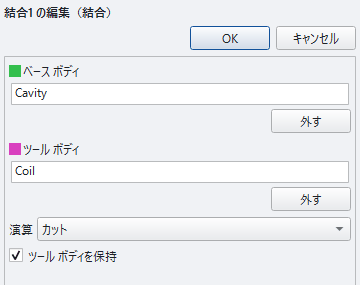
図 8-4 結合のフォーム。［ベース ボディ］（緑）に［Cavity］、［ツール ボディ］（赤紫）に［Coil］を選び、［演算］を［カット］にしたところです。欄には、ボディの名前が出ます。 ［演算］を選びます。違いは次の表のとおりです。
演算に使ったツール ボディを残すときは、［ツール ボディを保持］にチェックを入れます。チェックを外すと、ツール ボディは演算で使われて消えます。
［OK］で確定します。

| 演算 | 結果 |
|---|---|
| ［結合］ | ベースとツールを 1 つの形にまとめます（和） |
| ［カット］ | ベースからツールの形を引きます（差）。型の溝を掘るときに使います |
| ［交差］ | ベースとツールが重なる部分だけを残します（共通部分） |

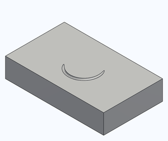

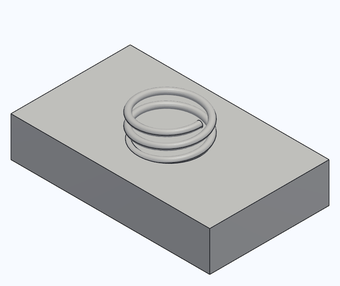

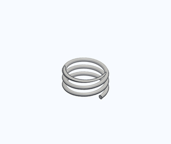
3 つの写真は、［ツール ボディを保持］のチェックを外して撮っています。
8.3 ボディを分割する
［分割］は、作業平面や平らな面でボディを切ります。切った片を別々のボディにする方法と、片側を捨てる方法があります。
分割の手順
リボンの［3D モデル］タブ → ［修正］パネル → ［分割］をクリックします。
［方法］を選びます。［ソリッドを分割］は片をそれぞれ別のボディにし、［ソリッドをトリム］は片側を捨てます。
［分割ツール］に、切る平面を選びます。作業平面・原点の平面・平らな面が選べます。面を選んだときは、その面を平面として無限に延ばした所で切ります。
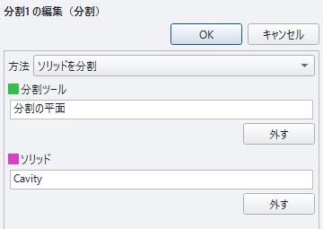
図 8-8 分割のフォーム。［方法］は［ソリッドを分割］です。切る平面は、題材の［分割の平面］（作業平面）で、切るボディは［Cavity］です。 ［ソリッド］に、切るボディを選びます。空のままにすると、分割ツールが切るボディのすべてが対象になります。
［OK］で確定します。
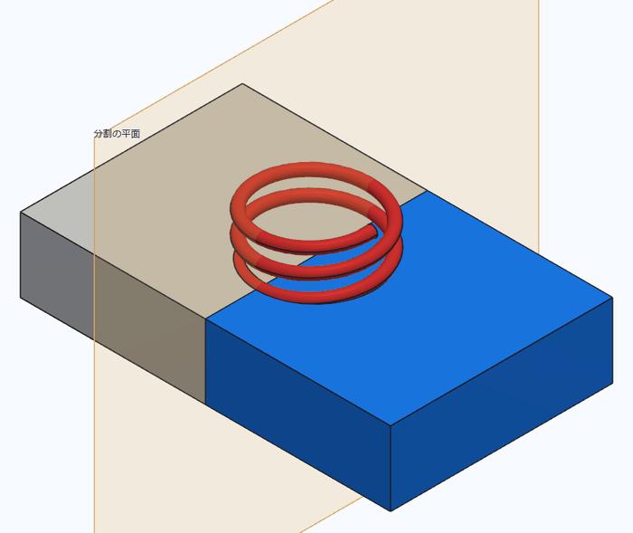
図 8-9 分割の結果（［分割1］の直後までロールバックしたところ）。ブロックが 2 つのボディに分かれました。青い片は［Core］です。


平面の位置は、作業平面の［オフセット］で変えられます。位置を変えると、片の大きさが変わります。平面がボディに届かなくなると、分割は［エラー］になり、「分割ツールはどのボディとも交わりません」と出ます。戻すと直ります。
片側を捨てる（トリム）
［方法］を［ソリッドをトリム］にすると、［反転］の欄が出ます。平面の法線の向きにある側が、既定で捨てられます。［反転］にチェックを入れると、捨てる側が逆になります。

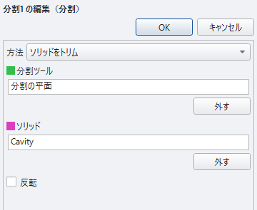

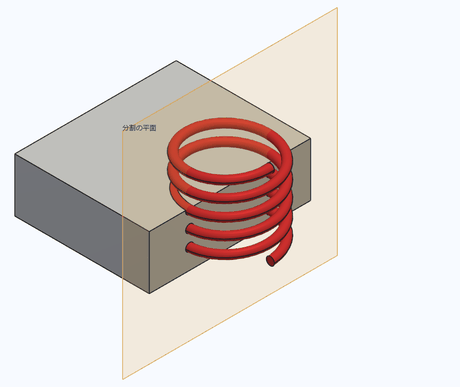

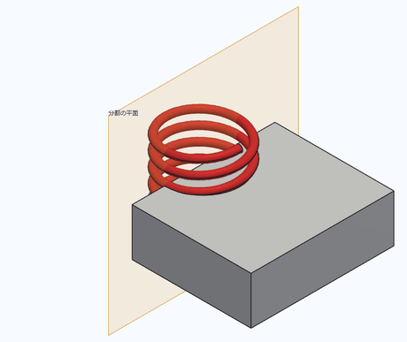
8.4 ボディを移動する
［ボディを移動］は、選んだボディを形を変えずに動かします。ボディは複数選べます。同じ移動量で一緒に動きます。
リボンの［3D モデル］タブ → ［修正］パネル → ［ボディを移動］をクリックします。
［ソリッド］に、動かすボディを選びます。ビューにトライアド（3 本の矢印と 3 つの円弧）が出ます。
矢印をドラッグして動かすか、フォームの欄に数値を入力します。
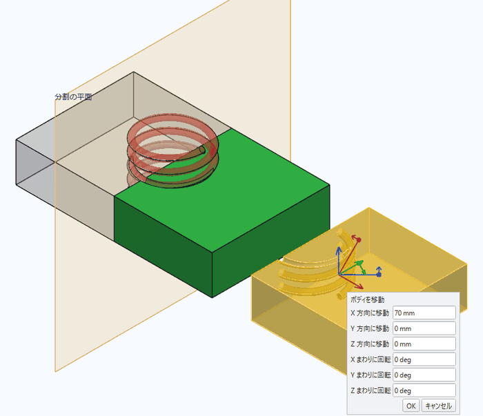
図 8-13 移動のプレビュー。緑が動かすボディの今の位置、黄色が動かした後の位置です。トライアドの横の欄に、移動量を入力できます。 ［OK］で確定します。


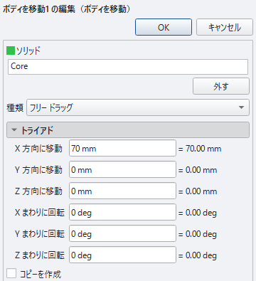
移動の種類
| 種類 | 欄 | 動き |
|---|---|---|
| ［フリー ドラッグ］ | ［X 方向に移動］・［Y 方向に移動］・［Z 方向に移動］・［X まわりに回転］・［Y まわりに回転］・［Z まわりに回転］ | トライアドの 6 つの値で動かします。矢印が移動、円弧が回転です |
| ［光線に沿って移動］ | ［方向］・［距離］ | 選んだ方向（作業軸・直線のエッジ・スケッチの線・平面や面の法線）へ、距離だけ動かします |
| ［線を中心に回転］ | ［回転軸］・［角度］ | 選んだ線（作業軸・直線のエッジ・スケッチの線・円筒の面の軸）のまわりに、角度だけ回します |

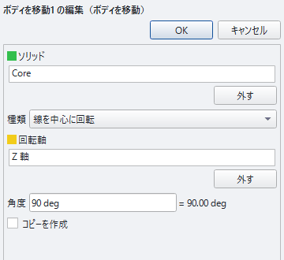
90 deg です。［コピーを作成］にチェックを入れると、元のボディをそのまま残し、動かした写しが新しいボディになります。
8.5 ボディを削除・保持する
［ボディを削除］は、選んだボディを消します。または、選んだボディだけを残して、ほかを消します。
リボンの［3D モデル］タブ → ［修正］パネル → ［ボディを削除］をクリックします。
［方法］を選びます。［削除］は選んだボディを消します。［保持］は選んだボディを残して、ほかのボディをすべて消します。
［ソリッド］に、ボディを選びます。
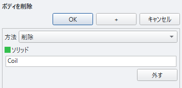
図 8-16 ボディを削除のフォーム。［方法］が［削除］で、［Coil］のボディを選んだところです。 ［OK］で確定します。

8.6 ボディの名前
ボディには、名前を付けられます。名前は、ブラウザ・結合や分割などのフォームのボディの欄・物理プロパティの表・エクスポートのダイアログに出ます。電磁場解析のソフトに渡す STEP では、ボディの名前が部品名（領域名）になります（第 26 章）。
名前を付ける
ブラウザの［ソリッド ボディ］の下で、ボディの行をクリックします。
F2（［名前の変更］）を押します。行がその場で編集できるようになります。右クリックのメニューの［ボディの名前を変更］でも同じです。
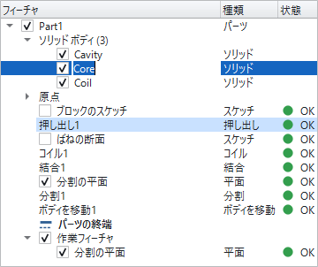
図 8-17 ［Core］の行を選んで F2 を押したところ。名前の欄が開き、全部が選ばれています。 名前を入力して Enter で確定します。Esc で取り消します。

名前を空にして確定すると、既定の名前（［押し出し1 のボディ］のように、作ったフィーチャの名前に基づく名前）に戻ります。分割で分けた片の 2 つ目以降は、分割のフィーチャの名前と片の番号が付いた名前（［押し出し1 のボディ (分割1 の 2 番目の片)］）になります。最初の片は、元のボディの名前のままです。名前の変更は、1 回が 1 つの Undo の項目です。

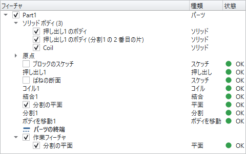
名前付き STEP の部品名
エクスポートのダイアログ（［STEP］）の［名前付き STEP（部品名 = 領域名）］には、書き出す部品名が並びます。名前を付けたボディは、その名前が部品名です。名前を付けていないボディは、パーツ名が部品名になります。パーツに複数のボディがあるときは、パーツ名に作成順の番号を付けた名前（［Part1_3］ など）です。番号は、名前を付けたボディにも振られます。

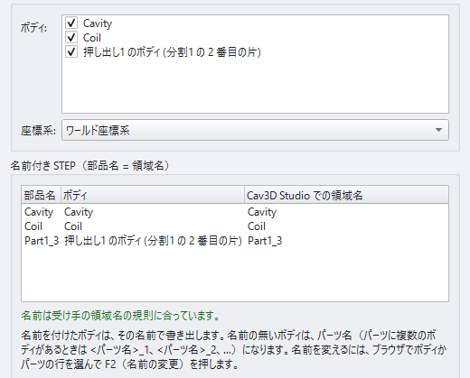
分けた後も、名前と材料は同じ片に付く
ボディの名前・材料・外観は、ボディの形ではなく、元のボディのどの片かに付きます。分割の平面の位置を変えても、［Core］の名前と材料は、同じ側の片に付いたままです。
ブラウザの［Core］をクリックし、プロパティ パネルの［材料］を［銅 C11000］にします。
ブラウザの［分割の平面］をダブルクリックし、［オフセット］に
25と入力して、［OK］で確定します。ブラウザの［Core］をクリックします。プロパティ パネルは、平面を動かした後の値になります。
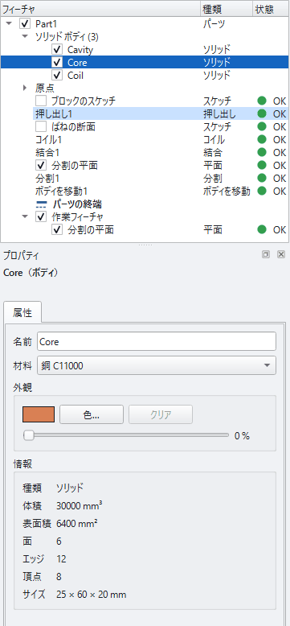
図 8-20 平面を動かした後の［Core］。名前も材料（［銅 C11000］）もそのままで、体積が 30000 mm³（25 × 60 × 20）の小さな片になっています。


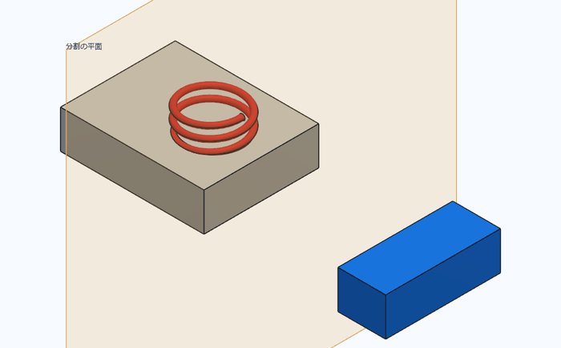
8.7 次に読む章
ブラウザのフィーチャを並べ替える・抑制する・参照を直すとき: 第 9 章 ブラウザとフィーチャの管理
ボディごとの材料・質量・色を確かめるとき: 第 12 章 検査
名前付き STEP を書き出すとき: 第 26 章 他の解析プログラムに形を渡す